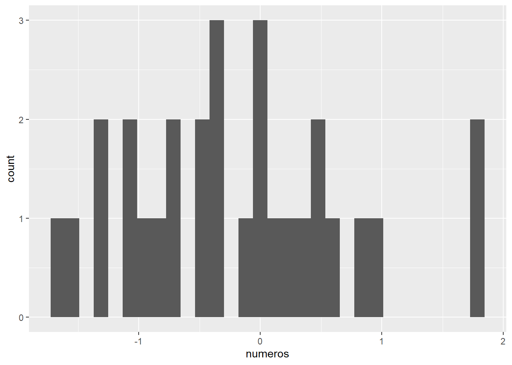

message("Esto es un mensaje ")Esto es un mensaje La mayoría del tiempo que estemos trabajando en R tendremos errores (errors) y advertencias (warnings). Un error en R es algo rutinario, pasa hasta en las mejores familias de programadores. La diferencia recae en que con la experiencia sabrás identificar y solucionar los errores o advertencias. Aquí trataré de darte herramientas para solucionar dichos errores.
Lo primero es entender la diferencia entre mensajes, advertencias y errores.
Los mensajes son simplemente eso, mensajes. R te comunica de alguna actividad que hace o que completó. Por ejemplo, es muy común tener mensajes cuando cargas o instalas un paquete. Los mensajes aparecerán en la consola. Dependiendo de tu configuración de R estudio tendrán el mismo color que el texto en la consola.
message("Esto es un mensaje ")Esto es un mensaje Las advertencias son mensajes que notifican de posibles problemas, pero que no detienen la operación de determinada función. Por tal motivo cuando tienes una advertencia puedes correr tu código y dependiendo del warning tu resultado o no puede ser el esperado. En muchos casos no es grave y puedes continuar con tu código sin problemas.
Por ejemplo, al cargar el paquete ggplot2 la consola me marcará un Warning, que dice que el paquete fue construido en la versión 4.1.3. Es una versión más actual que la mía, pero aún así el paquete funciona.
library(ggplot2)Otro ejemplo que vimos en la sección de gráficos es cuando tenemos un NA en la base de datos. Cuando graficas con ggplot, el te avisará cuando hay valores faltantes con un Warning. En este caso es el NA que agregué en la posición 19. A pesar de eso, todo funciona y el gráfico sale.
numeros <- rnorm(30, 0,1) # Números aleatorios
numeros[19] <- NA # Agrego un NA
x <- as.data.frame(numeros)
ggplot(x, aes(x=numeros))+
geom_histogram()`stat_bin()` using `bins = 30`. Pick better value with `binwidth`.Warning: Removed 1 row containing non-finite outside the scale range
(`stat_bin()`).
Pero cuidado, hay warnings que pueden afectar futuras operaciones. Por ejemplo si por alguna razón me equivoco y creo un logaritmo base 10 de valores negativos tendré NAS. Si posteriormente quiero calcular la media de dicho vector, tendré un error por el echo de que tengo solo NAs
seq_mala <- seq(-20,10)
loga <- log10(seq_mala)Warning: NaNs producedmean(loga)[1] NaNLos errores son mensajes fatales. Eso quiere decir que la función u operación se detiene y no se produce el resultado
"1"+2plot(grafics)Error in plot(grafics) : object 'grafics' not found
R no encuentra el objeto grafics. En este caso es porque simplemente no hemos generado ningún objeto con ese nombre. Muchas veces sucede porque olvidamos generar el objeto o porque lo escribimos de forma equivocada.
Verifica e inspecciona tus objetos. Muchas veces los errores se generan porque nuestro objeto no es del tipo correcto. Por ello es importante usar las funciones para explorar los objetos, visualizar tus tablas, etc.
mat <- matrix(letters[5:20], nrow = 5)Warning in matrix(letters[5:20], nrow = 5): data length [16] is not a
sub-multiple or multiple of the number of rows [5]mean(mat)Warning in mean.default(mat): argument is not numeric or logical: returning NA[1] NAstr(mat) chr [1:5, 1:4] "e" "f" "g" "h" "i" "j" "k" "l" "m" "n" "o" "p" "q" "r" "s" ...Utiliza el help de cada función para saber que puede estar sucediendo y como solucionarlo
mat2 <- matrix(sample(50), nrow = 5)
mat2[5,5] <- NA
mat2 [,1] [,2] [,3] [,4] [,5] [,6] [,7] [,8] [,9] [,10]
[1,] 35 13 45 26 4 6 43 37 7 12
[2,] 39 24 20 32 46 14 27 38 21 49
[3,] 25 48 29 40 41 36 28 42 17 34
[4,] 16 30 1 18 11 33 50 10 8 47
[5,] 31 5 23 22 NA 2 9 3 19 44mean(mat2)[1] NAhelp("mean")Resulta que la función mean tiene un argumento llamado na.rm que sirve para especificar que no considere los NAs en el procedimiento
mean(mat2, na.rm = TRUE)[1] 25.71429
La comunidad de R es muy buena ayudando a al gente, así que si copian y pegan el error en el buscador de google seguro encontrarán una solución. Con el tiempo también aprenderás a buscar en google los errores o cómo aprender a hacer ciertas operaciones.

Un foro muy famoso es Stackoverflow, allí hay preguntas y soluciones a problemas de programación e incluso estadísticos.

Extra ChatGPT https://chat.openai.com/chat: Este es un chat basado en una inteligencia artificial que intenta resolver cualquier pregunta que hagas, incluido preguntas de programación. Por ahora solo funciona en inglés e incluso da ejemplos en R con código incluido, eso si sabes preguntar
Hay que tener cuidado porque sigue generando respuestas incorrectas, pero con el tiempo supongo que irá mejorando. En todo caso esta interesante y es divertido probarlo.